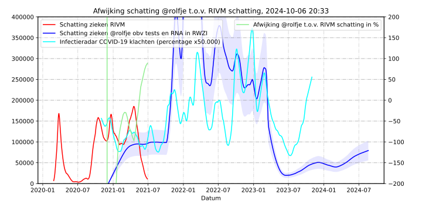

Uitleg bij COVID-19 gerelateerd zieken grafiek
 De COVID-19 gerelateerd ziek/besmettelijk grafiek laat zien hoeveel mensen er in Nederland geschat ziek of
besmettelijk zijn als gevolg van het COVID-19 virus, en hoeveel mensen in het ziekenhuis
danwel op een intensive care bed liggen. De verschillende grafieken worden als volgt
opgebouwd:
De COVID-19 gerelateerd ziek/besmettelijk grafiek laat zien hoeveel mensen er in Nederland geschat ziek of
besmettelijk zijn als gevolg van het COVID-19 virus, en hoeveel mensen in het ziekenhuis
danwel op een intensive care bed liggen. De verschillende grafieken worden als volgt
opgebouwd:
aantal opgenomen (nu:1746)
Het aantal mensen dat is opgenomen in het ziekenhuis met, of als gevolg van, een
COVID-19 besmetting zoals gerapporteerd door Stichting NICE.
aantal op IC (nu:672)
Het aantal mensen dat op een intensive care afdeling is opgenomen met, of als
gevolg van, een COVID-19 besmetting zoals gerapporteerd door Stichting NICE.
Schatting totaal mensen ziek op basis van RNA in rioolwater (nu: 167.947)
Hoewel er zorgvuldig naar het model en de data gekeken wordt, blijft dit
altijd een schatting met flinke onnauwkeurigheid, en moet meer gezien worden als
"verloop", dan een absoluut aantal. Voor een beter begrip wordt dit getal in het
overzicht getoond als een verhouding. Op dit moment is naar schatting 1 op
104 mensen ziek/besmettelijk.
In eerste instantie werden in deze grafiek de schattingen van het RIVM getoond. Deze schattingen werden tot 12 juni 2020 gebaseerd op de eerste Pienter-Coronastudie waarbij antistoffen zijn bepaald in een willekeurige steekproef van de Nederlandse bevolking. Tussen 12 juni en 8 oktober 2020 werd deze schatting gebaseerd op het aantal meldingen omdat het aantal ziekenhuisopnames te laag was voor betrouwbare schatting. Vanaf 8 oktober gebruikt het RIVM serologische gegevens uit de tweede Pienter-Coronastudie.
De RIVM schattingen worden wekelijks bijgewerkt. Daarbij is één week overgeslagen tijdens de overgangsperiode naar het gebruik van de gegevens uit de tweede Pienter-Coronastudie, waardoor het de schatting twee weken op 146.000 stond.
Tijdens die periode heb ik gezocht naar een andere manier van schatten die dagelijks bijgewerkt kan worden. Ik heb gekozen om dat op basis van de concentratie SARS-CoV2 RNA in het rioolwater te doen omdat dat niet afhankelijk is van het aantal tests dat wordt gedaan, en altijd een groot gedeelte van de bevolking en oppervlakte van Nederland dekt.
De methode die gebruikt wordt om te schatten is als volgt:
Voor iedere veiligheidsregio waarvoor SARS-CoV2 RNA per milliliter rioolwater beschikbaar is, wordt dit getal vermenigvuldigd met het aantal inwoners in die veiligheidsregio. Hierbij wordt er vanuitgegaan dat per persoon ongeveer evenveel rioolwater wordt gebruikt. Het getal dat hieruit komt is een dimensieloos getal dat alleen verloop weergeeft.
De nauwkeurigheid of betrouwbaarheid van dit getal wordt uitgedrukt in het percentage van de Nederlandse bevolking dat door deze cijfers wordt meegerekend. Er is niet altijd data van alle RWZI's in alle veiligheidsregio's, waardoor de nauwkeurigheid dan slechter wordt. Deze nauwkeurigheid wordt aangegeven met het blauwe vlak om de grafiek.
 Omdat het verloop van de schatting op basis van RNA niet veel afwijkt van dat de schatting van het RIVM, zoeken we een vaste vermenigvuldigigingsfactor voor een "best fit" op de RIVM schattingen. Effectief betekent dit dat de schatting op basis van RNA gecalibreerd wordt aan de beide Pienter-Coronastudies. Nadat de schattingen op basis van RNA zijn vermenigvuldigd met deze factor krijgen we de schatting van het aantal zieke/besmettelijke personen in Nederland. De afwijking in deze schattingen ziet u in de grafiek hiernaast.
Het voordeel van de schatting op basis van rioolwater is dat deze dagelijks kan worden bijgewerkt, zolang er RNA data beschikbaar is. Meestal is deze data een paar dagen oud. Het nadeel is dat door het grillige verloop van de RNA metingen de meest recente schatting van het aantal zieke/besmettelijke mensen flink kan fluctueren.